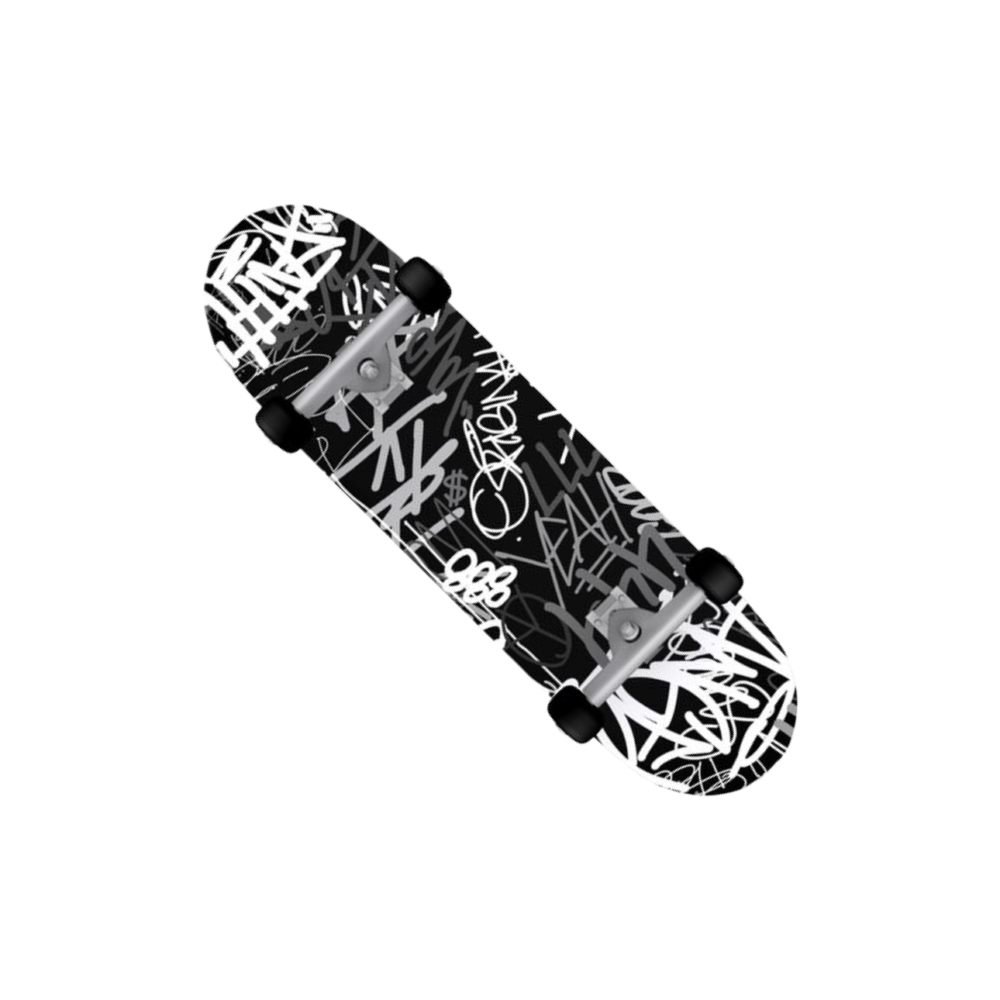
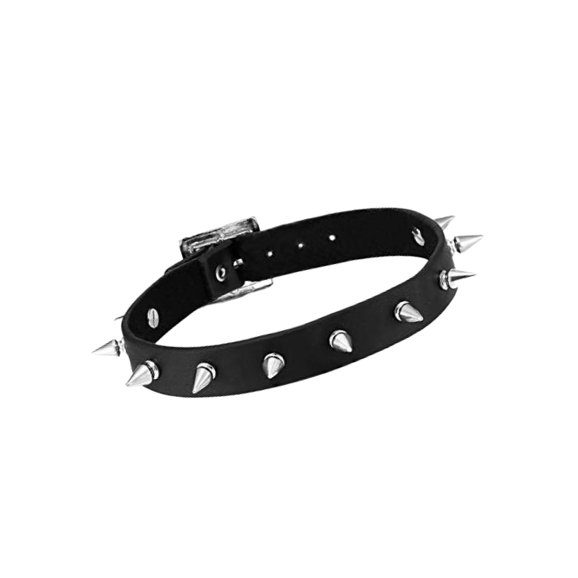
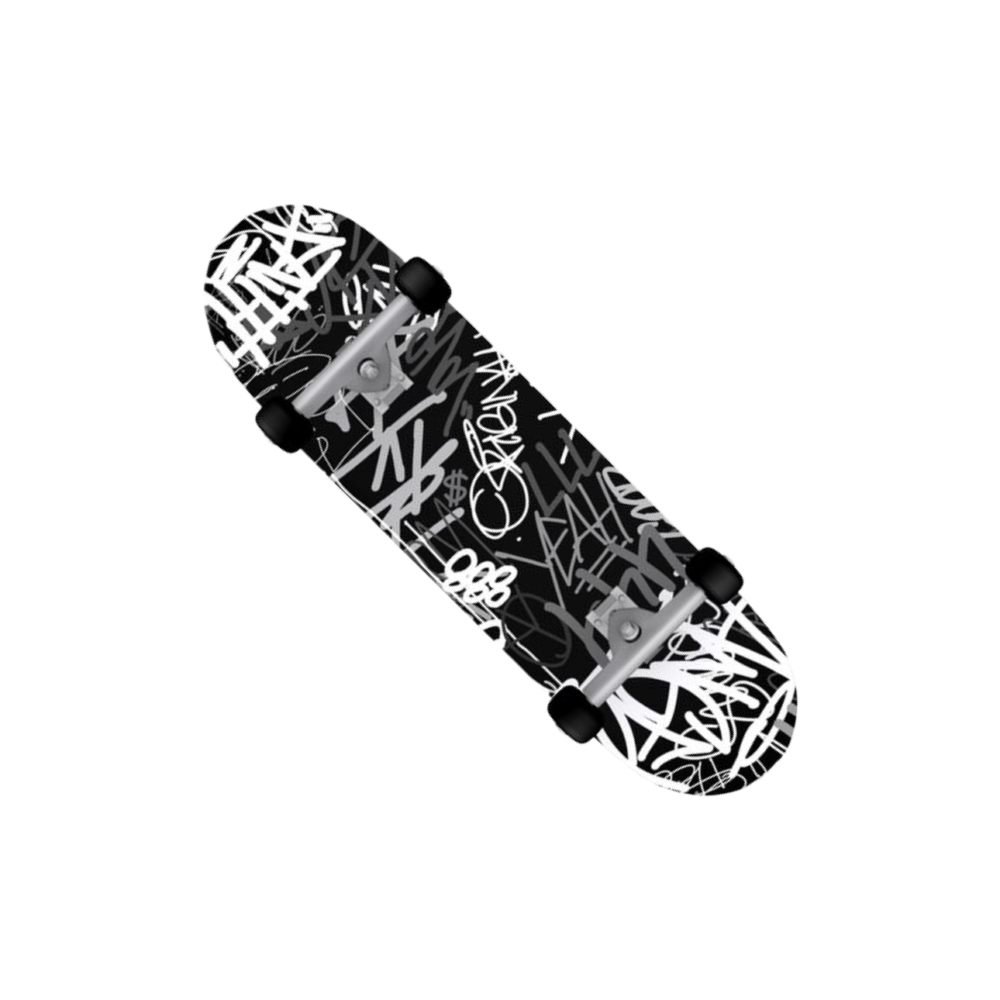
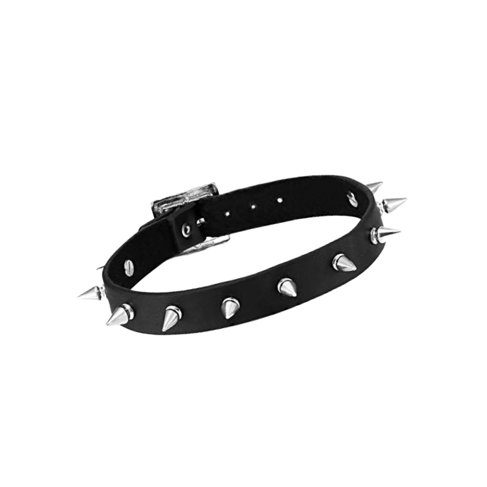
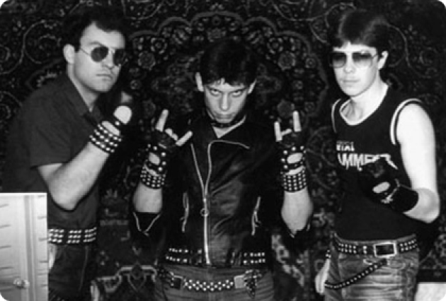
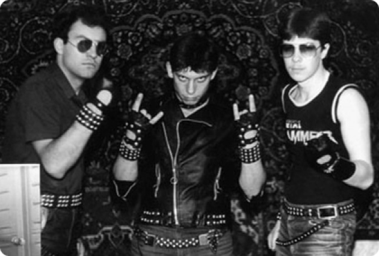
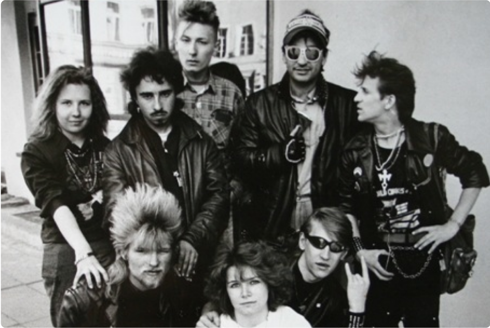
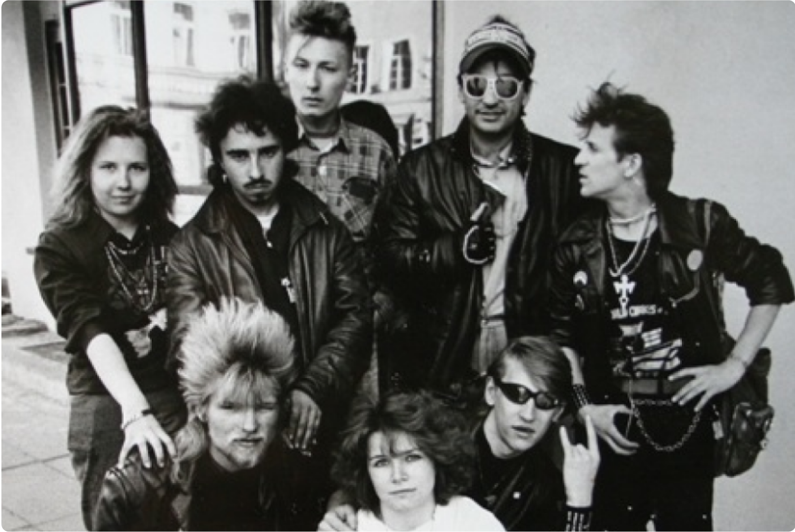

Узнай о и субкультурных
молодёжных движениях
в СССР в 80-90-е годы


 



Общее название для представителей раличных групп и субкультурных молодёжных движений в СССР 80-90-х годов.
Определение «неформáл» (укор. «нéфор») происходит от словосочетания «неформальные объединения молодёжи», возникшего в противопоставление «формальным»: комсомольской организации и другим, допускаемым властью.
«Неформалами» в середине 1980-х годов сотрудники органов внутренних дел и местных организаций КПСС называли самые различные неофициальные, самодеятельные сообщества молодых людей — группы социальной инициативы, клубы по интересам и подростковые банды.


«Неформалы» 90-х
Общее название для представителей
раличных групп
и субкультурных молодёжных движений в СССР 80-90-х годов.
«Неформалы» 90-х

Металлисты
Панки

Байкеры

Стиляги
Хиппи
В СССР субкультуры протестного и экстремального характера в целом были малоразвиты и имели узкий круг адептов; широкое распространение имели субкультуры активно-созидательного, романтического и альтруистического направления.
Неформалов можно было разделить на две основные категории: «общественников» и «эстетов». К «общественникам» относят активистов, изучавших общественно значимое явление, как хобби. К «эстетам» относят молодёжь, инстересующуюся западной музыкой.
Металлисты
Панки
Байкеры
Стиляги
Хиппи
В СССР субкультуры протестного и экстремального характера в целом были малоразвиты и имели узкий круг адептов; широкое распространение имели субкультуры активно-созидательного, романтического и альтруистического направления.
«Неформалами» в середине 1980-х годов сотрудники органов внутренних дел и местных организаций КПСС называли самые различные неофициальные, самодеятельные сообщества молодых людей — группы социальной инициативы, клубы по интересам и подростковые банды.
Субкультура поклонников метал-музыки, появившаяся в конце 1970-х годов вместе с самим жанром в США и Великобритании.

Считается, что метал-субкультуре свойственна своеобразная «культура отчуждения», с выработанной в соответствии с ней системой стандартов для определения принадлежности к группе. Метал сохранился гораздо лучше других жанров рок-музыки именно благодаря интенсивному развитию субкультуры металлистов, всегда существующей в молодёжной среде и изолированной от мейнстрима. Основная деятельность металлистов заключается в посещении концертов метал-групп, покупке их релизов, а также общения на форумах или группах в социальных сетях.
 



Субкультура поклонников метал-музыки, появившаяся в конце 1970-х годов вместе с самим жанром в США и Великобритании.
Считается, что метал-субкультуре свойственна своеобразная «культура отчуждения», с выработанной в соответствии с ней системой стандартов для определения принадлежности к группе. Метал сохранился гораздо лучше других жанров рок-музыки именно благодаря интенсивному развитию субкультуры металлистов, всегда существующей в молодёжной среде и изолированной от мейнстрима. Основная деятельность металлистов заключается в посещении концертов метал-групп, покупке их релизов, а также общения на форумах или группах в социальных сетях.


 


Субкультура поклонников метал-музыки, появившаяся в конце 1970-х годов вместе с самим жанром в США и Великобритании.
Считается, что метал-субкультуре свойственна своеобразная «культура отчуждения», с выработанной в соответствии с ней системой стандартов для определения принадлежности к группе. Метал сохранился гораздо лучше других жанров рок-музыки именно благодаря интенсивному развитию субкультуры металлистов, всегда существующей в молодёжной среде и изолированной от мейнстрима. Основная деятельность металлистов заключается в посещении концертов метал-групп, покупке их релизов, а также общения на форумах или группах в социальных сетях.


Ramones
Панки — субкультура, возникшая в конце 1960-х — начале 1970-х годов в Великобритании, США, Канаде и Австралии. На данный момент делится на стрит-панк, краст-панк, анархо-панк и просто панк, объединяющий в себе элементы всех подвидов движения. Такие группы, как Ramones и Sex Pistols, считаются первыми группами, игравшими музыку в стиле «панк-рок». С панк-роком тесно связано имя известного американского художника Энди Уорхола и продюсированной им группой Velvet Underground; их солист Лу Рид считается отцом-основателем альтернативного рока, течения, которое тесно связано с панк-роком.
Панк берёт своё начало в 1960-х годах, когда под влиянием The Beatles и The Rolling Stones стало появляться много молодёжных команд, исполняющих рок-н-ролл. Родителями панка такого, каков он есть, была нью-йоркская группа The Ramones. Они первые начали классифицировать себя как панков, создали внешний стиль и стиль игры.

Sex Pistols
Velvet Underground
The Stooges

Ramones
Sex Pistols

Velvet Underground

The Stooges


Молодёжная субкультура в СССР 1940-х — 1960-х годов, имевшая в качестве эталона преимущественно американский образ жизни.

Стиляги в СССР

Термин «стиляги» для обозначения советских подражателей тедди-боям ввёл сатирический журнал «Крокодил» (Д. Г. Беляев, статья «Стиляги» в 1949 году); одно из направлений, которое одевалось только в американские марки одежды, называло себя «штат», «штатники».
Стиляг отличала нарочитая аполитичность, определённый цинизм в суждениях, отрицательное или безразличное отношение к некоторым нормам советской морали. Стиляги выделялись яркой одеждой, определённой манерой разговора (особый сленг). Им был присущ повышенный интерес к музыке и танцам из-за рубежа. Субкультура стиляг явилась стихийным протестом против принятых в советском обществе стереотипов поведения, а также против единообразия в одежде, музыке и стиле жизни. Стилягами именовали вообще всех молодых людей, следовавших модам и уличаемых в «аморальном» образе жизни.